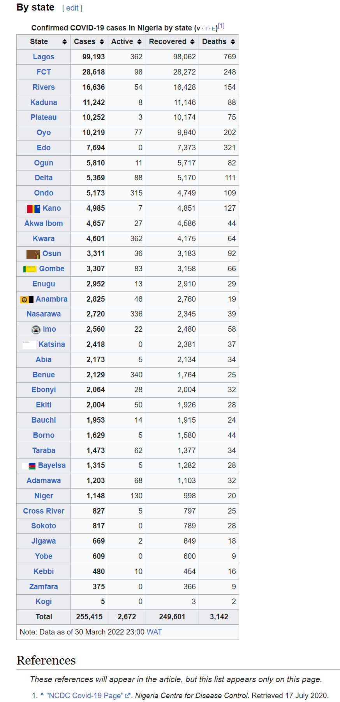

COVID-19 Cases in Nigeria
Overview
The COVID-19 pandemic in Nigeria was a part of the worldwide pandemic of coronavirus disease 2019 (COVID-19) caused by severe acute respiratory syndrome coronavirus 2 (SARS-CoV-2). The first confirmed case in Nigeria was announced on 27 February 2020, when an Italian national in Lagos tested positive for the virus. On 9 March 2020, a second case of the virus was reported in Ewekoro, Ogun State, a Nigerian citizen who came into contact with the Italian national. The effect of the virus in Nigeria has become notable worldwide for being extremely understated, as there have been just under 255,000 confirmed cases in a country of 200 million+; however, there has been far less testing for the virus in Nigeria than other countries.
As a Data Analyst, I designed a simple dashboard to visualize how the 255,000 COVID-19 cases is spread across Nigeria. The dashboard provides visualization for the below ;
- Total Number of Confirmed cases
- Total Number of death
- Total Number of cases of Recovery
- Total Number of Active casess
- Most affected states in Nigeria

Click here to view the live interactive dashboard
The Tools
- Power BI Desktop
The Steps
- Source data (From Wikipedia)
- Imported the data into Power BI Desktop
- Data Inspection and Cleaning
- Data Analysis
- Data Visualization
Source
Data was extracted from Wikipedia (https://en.wikipedia.org/wiki/Template:COVID-19_pandemic_data/Nigeria_medical_cases)
Import Data
Data was extracted from Wikipedia (https://en.wikipedia.org/wiki/Template:COVID-19_pandemic_data/Nigeria_medical_cases)
I imported the data into Power BI from the wikipedia web address above


"Null" values were identified during data inspection to be in the imported data

The "Null" values were removed using Power Query in Power BI

This is the final state of the data after it has ben cleaned

Data Analysis & Visualization
Below is the final product of the dashboard development
Click here to view the live interactive dashboard